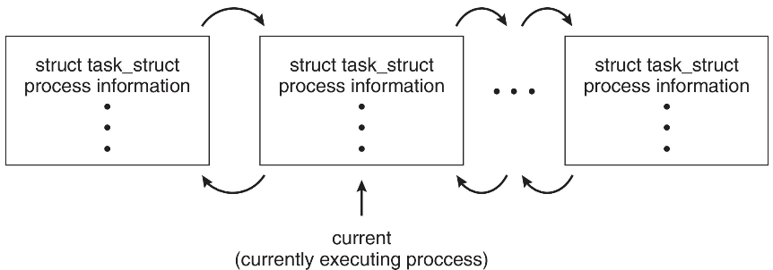

进程
进程的基本概念¶
进程的定义¶
典型的定义：
- 进程是进程实体的运行过程，是系统进行资源分配和调度的一个独立单位**
- 一个具有独立功能的程序在一个数据集合上运行的过程
区分进程、程序、进程实体¶
-
程序（Program）：是静态的，就是个存放在磁盘里的可执行文件，就是一系列的指令集合
-
静态连接
-
动态链接
-
进程（Process）：是动态的，是程序的一次执行过程
- 进程实体（进程映像）：是静态的，反应了进程在某一时刻的状态
进程实体的组成¶
一个进程实体（进程映像）由三个部分组成：
- PCB
- 进程描述信息
- 进程控制和管理信息
- 资源分配清单
- 处理机状态信息（CPU 上下文）
- 程序段
- 程序的代码（指令序列）
- 数据段
- 运行过程中产生的各种数据（如：程序中定义的变量）
Info
PCB 是给操作系统用的；程序段、数据段是给进程自己用的，与进程自身的运行逻辑有关
PCB¶
PCB 位于内存的内核空间里，创建之后常驻内存。
PCB 是进程存在的唯一标志，当进程被创建时，操作系统为其创建 PCB，当进程结束时，会会回收其 PCB。
Abstract
PCB 几乎完备的表示了进程的状态，也就是说只要有一个进程的 PCB，就可以恢复对应的进程
PCB 的结构¶
- 进程描述信息
- 进程标识符 PID
- 用户标识符 UID
- 进程控制和管理信息
- CPU、磁盘、网络流量使用情况统计 ⋯
- 进入内存时间
- CPU 占用时间
- 信号量使用
- 进程当前状态：就绪态/阻塞态/运行态
- 代码运行入口地址
- 程序的外存地址
- 程序优先级
- 资源分配清单
- 正在使用（依赖）哪些文件
- 文件描述符
- 正在使用哪些内存区域
- 代码段指针
- 数据段指针
- 堆栈段指针
- 正在使用哪些 I/O 设备
- 处理机相关信息，也叫 CPU 的上下文（the context of the processor）
- user-visible registers
- control and status registers (CSR)
- stack pointers
- PSW
- eg: EFLAGS in x86
Linux 的 PCB¶
Linux 中的进程控制块 PCB 源码位于 linux-x.xx.xx/include/linux/sched.h
Linux 不区分进程和线程，将它们都视为 task
由 C 结构 task_struct 表示：
{
pid t_pid；/*进程标识符*/
unsigned int time_slice /*调度信息*/
struct task_struct* 父进程；/*此进程的父级*/
struct list_head children；/*此进程的子进程*/
struct *files；/*打开文件列表*/
struct mm_struct*mm；/*此进程的地址空间*/
...
}

进程的特征¶
- 动态性——进程是程序的一次执行过程，是动态地产生、变化和消亡的（动态性是进程最基本的特征）
- 并发性——内存中有多个进程实体，各进程可并发执行
- 独立性——进程是能独立运行、独立获得资源、独立接受调度的基本单位
- 异步性——各进程按各自独立的、不可预知的速度向前推进，操作系统要提供“进程同步机制"来解决异步问题
- 结构性——每个进程都会配置一个 PCB。结构上看，进程由程序段、数据段、PCB 组成
进程的状态与转换¶
The steps in a full process switch are:
- save the context of the processor
- update the PCB of the process currently in the Running state
- move the PCB of this process to the appropriate queue
- select another process for execution
- update the PCB of the process selected
- update memory management data structures
- restore the context of the processor to that which existed at the time the selected process was last switched out
五状态模型¶

七状态模型¶
增加了挂起状态的进程
挂起进程的特征：
-
进程不能立即执行（上处理机）
-
进程可能有也可能么有等待一个事件（为什么那么像废话）
-
为阻止该进程执行，可通过代理使其处于挂起状态；代理可以是：
-
进程本身
-
父进程
-
操作系统
-
只有代理程序显示地命令操作系统进行状态轮换，才能使该进程从挂起的状态转移
进程挂起的原因：
- Swaping
- Other OS reason
- Interactive user request
- Timing
- Parent pocess request
双挂起状态的进程模型：

进程组织¶
进程组织的数据结构
链接式组织进程¶

索引式组织进程¶

进程控制¶
也就是对进程的操作，这些基本操作几乎全部都是系统调用实现的
系统调用¶
Some basic and important system calls
PCB 的访问：

fork()exec*()wait()exit()
Linux 举例¶
父进程创建子进程，子进程又创建其他进程，形成进程树；父子之间不同角度可能有不同关系：
- 资源共享
- 父和子共享所有资源 (Linux 中父进程
vfork) - 子进程共享父进程资源的子集 (Linux 中父进程
vfork) - 父进程和子进程不共享任何资源 (Linux 中父进程
fork) - 执行
- 父进程和子进程同时并发执行
- 父进程等待直到子进程终止 (Linux 中父进程
wait(0)) - 地址空间
- 子进程是父进程的复制品 (Linux 中父进程
fork) - 子进程加载另一个新的程序
- 子进程完全覆盖父进程 (Linux 中父进程
fork+exec)execfamily 有 6 个成员execl装载新的文件
fork¶
Linux 中，由父进程调用系统调用 fork() 创建子进程
#include<stdio.h>
#include<unistd.h>
int main (){
for(int i=0;i<4;++i){
fork();
}
printf("This is a test printed by %d\n", getpid());
return 0;
}
编译运行上述程序将打印出 16 次！因为这里子进程是父进程的复制品：
node1@vm1:~/Desktop$ gcc -o test test.c
node1@vm1:~/Desktop$ ./test
This is a test printed by 139377
This is a test printed by 139382
This is a test printed by 139380
This is a test printed by 139379
This is a test printed by 139378
This is a test printed by 139383
node1@vm1:~/Desktop$ This is a test printed by 139381 ## 父进程结束
This is a test printed by 139386
This is a test printed by 139387
This is a test printed by 139385
This is a test printed by 139388
This is a test printed by 139389
This is a test printed by 139384
This is a test printed by 139390
This is a test printed by 139391
This is a test printed by 139392
fork 会克隆的内容：
| Cloned items | Descriptions |
|---|---|
| Program code [File & Memory] | They are sharing the same piece of code. |
| Memory | Including local variables, global variables, and dynamically allocated memory. |
| Opened files [Kernel's internal] | If the parent has opened a file "A", then the child will also have file "A" opened automatically. |
| Program counter [CPU register] | That's why they both execute from the same line of code after fork() returns. |
fork 不克隆的内容：
| Distinct items | Parent | Child |
|---|---|---|
| Return value of fork() PID of the child process. | 0 | |
| PID | Unchanged. | Different, not necessarily be "Parent PID + 1" |
| Parent process | Unchanged. | Doesn't have the same parent as that of the parent process. |
| Running time | Cumulated. | Just created, so should be 0. |
vfork 函数是 fork 函数基础上的修正， fork 函数创建一个完全分离的进程，而 vfork 用于创建一个共享的进程，没有克隆操作，这意味着父进程子进程可以互相看到对方，共享同样的物理地址
exec*¶
exec* 系统调用，会“鸠占鹊巢”，替换掉原进程的代码，但是 PID、父子关系、进程运行时间都不变，也就是：
- 内核里的内容不变，包括 PCB 等
- 用户态里的代码被替换
#include<stdio.h>
#include<unistd.h>
int main(void) {
printf("before execl ...\n"); // 原进程代码可以执行
execl("/bin/ls", "/bin/ls", NULL); // exec 的一个成员函数
printf("after execl ...\n"); // 原进程代码无法执行
return 0;
}
编译执行结果：
node1@vm2:~/Desktop$ gcc -o test test.c
node1@vm2:~/Desktop$ ./test
before execl ...
sdb stack_rwx.c test test01 test.c ysos
wait和waitpid¶
| wait() | waitpid() |
|---|---|
| Wait for any one of the children. | Depending on the parameters, waitpid() will wait for a particular child only. |
| Detect child termination only. | Depending on the parameters, waitpid() can detect child's status changing: -from running to suspended, and -from suspended to running. |
fork+exec*¶
执行顺序是不确定的
#include<stdio.h>
#include<unistd.h>
int system_test(const char *cmd_str) {
if(cmd_str ** -1)
return -1;
if(fork() ** 0) {
execl(cmd_str, cmd_str, NULL);
fprintf(stderr,"%s: command not found\n", cmd_str);
exit(-1);
}
return 0;
}
int main(void) {
printf("before...\n\n");
system_test("/bin/ls");
printf("\nafter...\n");
return 0;
}
编译执行结果：
node1@vm2:~/Desktop$ gcc -o test test.c
node1@vm2:~/Desktop$ ./test
before...
after...
sdb stack_rwx.c test test01 test.c ysos ## 执行 ls
类似于一个 shell 或 system，不过 system 创建子进程，时串行执行，执行顺序是确定的。
fork+exec*+wait¶
等价于 system
#include<stdio.h>
#include<unistd.h>
int system_test(const char *cmd_str) {
if (cmd_str ** -1)
return -1;
if(fork() ** 0) {
execl("/bin/sh", "/bin/sh","-c", cmd_str, NULL);
fprintf(stderr,"%s: command not found\n", cmd_str);
exit(-1);
}
wait(NULL);
return 0;
}
int main(void) {
printf ("before...\n\n"); system_test("/bin/1s");
printf("\nafter...\n");
return 0;
}
编译执行结果：
node1@vm2:~/Desktop$ gcc -o test test.c
node1@vm2:~/Desktop$ ./test
before...
sdb stack_rwx.c test test01 test.c ysos
after...
exit¶
父进程 wait 和子进程 exit 搭配食用。子进程执行最后一条语句，然后调用 exit 系统调用请求操作系统删除它自己，然后子进程将发送 SIGCHLD 给父进程，并变僵尸进程；父进程接收到 SIGCHLD 后被唤醒（原本被 wait 休眠），处理 SIGCHLD 之后，子进程才被彻底销毁。
#include<stdio.h>
#include<unistd.h>
#include<stdlib.h>
int main(void){
int count = 1;
pid_t childpid, terminatedid;
childpid = fork(); /* child duplicates parent’s address space */
if (childpid < 0) {
perror("fork()");
return EXIT_FAILURE;
}
else if (childpid ** 0) { /* This is child pro */
count++;
printf("child pro pid = %d, count = %d (addr = %p)\n", getpid(), count, &count);
printf("child sleeping ...\n");
sleep(5); /* parent wait() during this period */
printf("\nchild waking up!\n");
}
else { /* This is parent pro */
terminatedid = wait(0);
printf("parent pro pid = %d, terminated pid = %d, count = %d (addr = %p)\n",
getpid(), terminatedid, count, &count);
}
printf("\nTesting point by %d\n", getpid()); /* executed by child and parent */
return EXIT_SUCCESS;
}
编译运行结果：
node1@vm2:~/Desktop$ ./test
child pro pid = 197382, count = 2 (addr = 0x7ffc33c444cc)
child sleeping ...
## 这里等待了 5 秒钟
child waking up!
Testing point by 197382
parent pro pid = 197381, terminated pid = 197382, count = 1 (addr = 0x7ffc33c444cc)
Testing point by 197381
Abstract
僵尸进程：空有 PCB “外壳”，但是没有用户态的代码，无法执行；
注意区分孤儿进程
abort¶
父进程可以使用 abort 系统调用终止子进程的执行。这样做的一些原因：
- 子进程已超出分配的资源
- 不再需要分配给子进程的任务
- 父进程正在退出，如果父进程终止，操作系统不允许子进程继续
进程控制原语¶
进程控制由原语实现
Abstract
如果不能像原语“一气呵成”，就有可能导致操作系统中的某些关键数据结构信息不统一的情况，这会影响操作系统进行别的管理工作
原语的执行具有原子性，即执行过程只能一气呵成，期间不允许被中断。
可以用 “关中断指令” 和 “开中断指令” 这两个特权指令实现原子性
无论哪个进程控制原语，要做的无非三类事情：
- 更新 PCB 中的信息
- 修改进程状态（state）
- 保存/恢复运行环境
- 将 PCB 插入合适的队列
- 分配/回收资源
创建¶
- 申请空白 PCB
- 为新进程分配所需资源
- 初始化 PCB
- 将 PCB 插入就绪队列（进程由阻塞态转变为就绪态）
引起进程创建的事件可能有：
- 用户登录——分时系统中，用户登录成功，系统会建立为其建立一个新的进程
- 作业调度——多道批处理系统中，有新的作业放入内存时，会为其建立一个新的进程
- 提供服务——用户向操作系统提出某些请求时，会新建一个进程处理该请求
- 应用请求——由用户进程主动请求创建一个子进程
所有进程都是以父进程创建子进程的方式创建的：
- 有些是显式的
- 用户进程创建的
- 有些是隐式的
- 操作系统 “0 号” 根进程创建的（所有进程的祖先）
根进程¶
The first process -- The kernel, while it is booting up, creates the firstprocess -- init.
The init process:
- has PID = 1
- and is running the program code “/sbin/init”.
- Its first task is to create more processes...
孤儿进程¶
父进程创建子进程一层一层创建，但若其中某一个父进程 terminate 了，也就是被终止了，那么被终止进程所创建的进程就变成了孤儿进程。孤儿进程会消耗资源，需要被重新管理起来。
- Linux 中，使用 re-parent operation 处理孤儿进程， The “init” process will become the step-mother of all orphans.
- Windows maintains a forest-like hierarchy.
撤销¶
这一过程进程： 就绪态/阻塞态/运行态 -> 终止态 -> 无
- 从 PCB 集合中找到终止进程的 PCB
- 若进程正在运行，立即剥夺 CPU，将 CPU 分配给其他进程
- 终止其所有子进程
- 将该进程拥有的所有资源归还给父进程或操作系统
- 删除 PCB
引起进程终止的事件可能有：
- 正常结束——进程自己请求终止（exit 系统调用）
- 异常结束——被操作系统强行杀掉
- 整数除以 O
- 非法使用特权指令
- 外界干预——用户选择杀掉进程
- Ctrl+Alt+delete
- kill pid
阻塞¶
- 找到要阻塞的进程对应的 PCB
- 保护进程运行现场，将 PCB 状态信息设置为“阻塞态"，暂时停止进程运行
- 将 PCB 插入相应事件的等待队列
引起进程阻塞的事件可能有：
- 需要等待系统分配某种资源
- 需要等待相互合作的其他进程完成工作
唤醒¶
- 在事件等待队列中找到 PCB
- 将 PCB 从等待队列移除，设置进程为就绪态
- 将 PCB 插入就绪队列，等待被调度
引起进程唤醒的事件可能有：
- 等待的事件发生
切换¶
- 将运行环境信息存入 PCB
- PCB 移入相应队列
- 选择另一个进程执行，并更新其 PCB
- 根据 PCB 恢复新进程所需的运行环境
系统切换：

引起进程切换的事件可能有：
- 当前进程时间片到
- 有更高优先级的进程到达
- 当前进程主动阻塞
- 当前进程终止
进程通信¶
进程间通信（Inter-Process Communication, IPC）是指两个进程之间产生数据交互。
 为什么需要进程通信：
为什么需要进程通信：
- 进程是分配系统资源的单位（包括内存地址空间），因此各进程拥有的内存地址空间相互独立
- 为了保证安全，一个进程不能直接访问另一个进程的地址空间
- 多核处理器系统中，消息传递优于共享内存，因为没有 cache 的一致性问题
Abstract
Linux 的 IPC 限制信息可在 /etc/sysctl.conf 中查看
ipcs 可以查看当前操作系统里有多少消息队列、共享内存块、信号量
- 低级通信
- 共享文件，信号量 PV 操作
- 高级通信——以较高的效率传输大量数据
- 共享内存
- 消息传递
- 管道通信
共享存储¶
为避免出错，各个进程对共享空间的访问应该是互斥的
基于存储区共享¶
操作系统在内存中划出一块共享存储区，数据的形式、存放位置都由通信进程控制，而不是操作系统。这种共享方式速度很快，是一种高级通信方式
Abstract
通过“增加页表项/段表项”即可将同一片共享内存区映射到各个进程的地址空间中
Linux 共享内存¶
// shm 即 share memory 的缩写
int shm_open (...);
// 通过 shm_open 系统调用，申请一片共享内存区
void * mmap (...);
// 通过 mmap 系统调用，将共享内存区映射到进程自己的地址空间
Key ID¶
#include <sys/shm.h>
key_t ftok(const char *pathname, int id);
/* key_t is of type int. ftok() convert a pathname and a project identifie
to an IPC key */
key_t key = ftok(“/home/myshm", 0x27);
if((key ** -1) {
perror(“ftok()");
} else
printf("key = 0x%x\n", key);
Create¶
int shmget(key_t key, int size, int shmflg);
/* shmget() allocates a shared memory segment */
/* upper bound of size: 1.9G */
int shmid = shmget(IPC_PRIVATE, 4096, IPC_CREATE|IPC_EXCL|0660);
if(shmid ** -1) {
perror("shmget()");
}
基于数据结构的共享¶
比如共享空间里只能放一个长度为 10 的数组。这种共享方式速度慢、限制多，是一种低级通信方式
消息传递¶
进程间的数据交换以格式化的消息（Message）单位。进程通过操作系统提供的两个原语进行数据交换：
- 发送原语，
send(X, msg)，X 是发送目标 - 接收消息，
receive(X, &msg)，X 是从哪里接收
格式化的消息（Message）的结构：
- 消息头
- 发送进程 ID
- 接受进程 ID
- 消息长度等格式化的信息
- 消息体
直接通信方式¶
P 传递消息给 Q 的过程：
- P 发送原语
send(Q, msg) msg数据被封装为格式化消息- 格式化消息被从 P 的地址空间转移到操作系统内核的地址空间中进程 Q 的消息队列
- Q 接收原语
receive(P, &msg) - 格式化消息被从操作系统内核的地址空间中进程 Q 的消息队列转移到 Q 的地址空间
- 解析格式化的消息
特性：
- 链接是自动建立的
- 链路仅与一对通信进程相关联
- 每对之间只存在一个链接
- 链路可能是单向的，但通常是双向的
这种通信方式展示了寻址的对称性，即发送和接收进程必须指定对方，以便通信。
也可以采用寻址的非对称性，即只要发送者指定接收者，而接收者不需要指定发送者
间接通信方式¶
以“信箱”（或某些特定的端口）作为中间实体进行消息传递，可以多个进程往同一个信箱 send 消息，也可以多个进程从同一个信箱中 receive 消息；
每个邮箱都有一个唯一的 id ，进程只有在共享邮箱时才能通信；
允许链接最多与两个进程关联
一次只允许一个进程执行接收操作
允许系统任意选择接收器。通知发送方接收者是谁。

P 传递消息给 Q 的过程：
- （创建邮箱）
- P 发送原语
send(A, msg)，发送给信箱 A msg数据被封装为格式化消息- 格式化消息被从 P 的地址空间转移到操作系统内核的地址空间中信箱 A 中
- Q 接收原语
receive(A, &msg)，从信箱 A 接收消息 - 格式化消息被从操作系统内核的地址空间中信箱 A 转移到 Q 的地址空间
- 解析格式化的消息
- （删除邮箱）
特性：
- 仅当进程共享公共邮箱时才建立链接
- 链接可能与许多进程相关联
- 每对进程可以共享多个通信链路
- 链路可以是单向的或双向的
邮箱所有者：
- 邮箱可以被进程拥有；
- 邮箱被操作系统拥有；
- 邮箱可以转移
同步/异步¶
消息传递可以是阻塞的，也可以是非阻塞的
- 阻塞被认为是同步的
- 阻塞发送—在接收进程或者邮箱收到消息之前，发送进程阻塞；
- Blocking receive（阻塞接收）——在消息可用之前，接收进程将被阻塞
- 非阻塞被认为是异步的
- 非阻塞发送——发送进程发送消息并继续执行；
- 非阻塞接收——接收进程接收：
- 有效消息
- 或空消息
- 可能有不同的组合
- 如果发送和接收都是阻塞的，双方之间有一个交会。
Warning
与其他课程的阻塞、同步异步关系可能不太一样
缓存¶
附加到链接的消息队列，不管通信是直接还是间接的；以三种方式之一实现队列：
- 1.零容量–链路上没有消息排队。发送方必须等待接收方
- 2.有限容量–有限长度的 n 条消息，如果链路已满，则发送者必须等待
- 3.无限容量–无限长，发送方从不等待
Linux 接口实现¶
msgdata.h
#define TEXT_SIZE 512
/* considering
------ Messages Limits --------
max queues system wide = 32000
max size of message (bytes) = 8192
default max size of queue (bytes) = 16384
------------------------------------------
The size of message is set to be 512, the total number of messages is 16384/512 = 32
If we take the max size 8192, the number would be 16384/8192 = 2. It is not reasonable
*/
/* message structure */
struct msg_struct {
long int msg_type;
char mtext[TEXT_SIZE]; /* binary data */
};
#define PERM S_IRUSR|S_IWUSR|IPC_CREAT
#define ERR_EXIT(m) \
do { \
perror(m); \
exit(EXIT_FAILURE); \
} while(0)
msgsnd.c
#include <stdio.h>
#include <stdlib.h>
#include <string.h>
#include <unistd.h>
#include <sys/msg.h>
#include <sys/stat.h>
#include <fcntl.h>
#include "msgdata.h"
int main(int argc, char *argv[])
{
struct msg_struct data;
long int msg_type;
char buffer[TEXT_SIZE], pathname[80];
int msqid, ret, count = 0;
key_t key;
FILE *fp;
struct stat fileattr;
if(argc < 2) {
printf("Usage: ./a.out pathname\n");
return EXIT_FAILURE;
}
strcpy(pathname, argv[1]);
if(stat(pathname, &fileattr) ** -1) {
ret = creat(pathname, O_RDWR);
if (ret ** -1) {
ERR_EXIT("creat()");
}
printf("shared file object created\n");
}
key = ftok(pathname, 0x27); /* project_id can be any nonzero integer */
if(key < 0) {
ERR_EXIT("ftok()");
}
printf("\nIPC key = 0x%x\n", key);
msqid = msgget((key_t)key, 0666 | IPC_CREAT);
if(msqid ** -1) {
ERR_EXIT("msgget()");
}
fp = fopen("./msgsnd.txt", "rb");
if(!fp) {
ERR_EXIT("source data file: ./msgsnd.txt fopen()");
}
struct msqid_ds msqattr;
ret = msgctl(msqid, IPC_STAT, &msqattr);
printf("number of messages remainded = %ld, empty slots = %ld\n",
msqattr.msg_qnum, 16384/TEXT_SIZE-msqattr.msg_qnum);
printf("Blocking Sending ... \n");
while (!feof(fp)) {
ret = fscanf(fp, "%ld %s", &msg_type, buffer);
if (ret ** EOF) break;
printf("%ld %s\n", msg_type, buffer);
data.msg_type = msg_type;
strcpy(data.mtext, buffer);
ret = msgsnd(msqid, (void *)&data, TEXT_SIZE, 0);
/* 0: blocking send, waiting when msg queue is full */
if(ret ** -1) {
ERR_EXIT("msgsnd()");
}
count++;
}
printf("number of sent messages = %d\n", count);
fclose(fp);
system("ipcs -q");
exit(EXIT_SUCCESS);
}
msgrcv.c
#include <stdio.h>
#include <stdlib.h>
#include <string.h>
#include <unistd.h>
#include <sys/msg.h>
#include <sys/stat.h>
#include "msgdata.h"
int main(int argc, char *argv[])
{
key_t key;
struct stat fileattr;
char pathname[80];
int msqid, ret, count = 0;
struct msg_struct data;
long int msgtype = 0; /* 0 - type of any messages */
if(argc < 2) {
printf("Usage: ./msgrcv pathname msg_type\n");
return EXIT_FAILURE;
}
strcpy(pathname, argv[1]);
if(stat(pathname, &fileattr) ** -1) {
ERR_EXIT("shared file object stat error");
}
if((key = ftok(pathname, 0x27)) < 0) {
ERR_EXIT("ftok()");
}
printf("\nIPC key = 0x%x\n", key);
msqid = msgget((key_t)key, 0666); /* do not create a new msg queue */
if(msqid ** -1) {
ERR_EXIT("msgget()");
}
if(argc < 3)
msgtype = 0;
else {
msgtype = atol(argv[2]);
if (msgtype < 0)
msgtype = 0;
} /* determin msgtype (class number) */
printf("Selected message type = %ld\n", msgtype);
while (1) {
ret = msgrcv(msqid, (void *)&data, TEXT_SIZE, msgtype, IPC_NOWAIT);
/* Non_blocking receive */
if(ret ** -1) { /* end of this msgtype */
printf("number of received messages = %d\n", count);
break;
}
printf("%ld %s\n", data.msg_type, data.mtext);
count++;
}
struct msqid_ds msqattr;
ret = msgctl(msqid, IPC_STAT, &msqattr);
printf("number of messages remainding = %ld\n", msqattr.msg_qnum);
if(msqattr.msg_qnum ** 0) {
printf("do you want to delete this msg queue?(y/n)");
if (getchar() ** 'y') {
if(msgctl(msqid, IPC_RMID, 0) ** -1)
perror("msgctl(IPC_RMID)");
}
}
system("ipcs -q");
exit(EXIT_SUCCESS);
}
POSIX(pthread)实现¶
#include <mqueue.h>
## Open, Close and Unlink
mqd_t mq_open(const char *name, int oflag, mode_t mode, struct mq_attr *attr ); /* return the mqdes, or -1 if failed */
mqd_t mqID;
mqID = mq_open("/anonymQueue", O_RDWR | O_CREAT, 0666, NULL);
mqd_t mq_close(mqd_t mqdes);
mqd_t mq_unlink(const char *name); /* return -1 if failed */
## Send and Receive
mqd_t mq_send(mqd_t mqdes, const char *msg_ptr, size_t msg_len, unsigned msg_prio); /* return 0, or -1 if failed */
mq_send(mqID, msg, sizeof(msg), i)
mqd_t mq_receive(mqd_t mqdes, char *msg_ptr, size_t msg_len, unsigned *msg_prio); /* return the number of char received, or -1 if failed */
mq_attr mqAttr;
mq_getattr(mqID, &mqAttr);
mq_receive(mqID, buf, mqAttr.mq_msgsize, NULL)
Note that the Linux ipcs utility is not fully compatible to the POSIX ipcs utility. The message queues, shared memory and semaphores in POSIX can not be sensed by System V bash command such as ipcs -q
Mach¶
Mach 作为微内核结构，其通信是基于消息传递的设计，甚至系统调用也是消息传递
- 每个任务在创建时获得两个端口-内核和通知
- 使用
mach_msg()函数发送和接收消息 - 通信所需的端口，通过创建 mach 端口分配
- 收发灵活；例如，邮箱已满时有四个选项：
- 无限期地等待
- 最多等待 n 毫秒
- 立即返回
- 临时缓存消息
Windows¶
通过高级本地过程调用（ALPC）设施以消息传递为中心，仅在同一系统上的两个进程之间工作，类似 RPC；
- 使用端口（如邮箱）建立和维护通信通道；
- 使用两种类型的端口：
- 连接端口
- 通信端口
通讯工作如下：
- 客户端打开子系统连接端口对象的句柄；
- 客户端发送一个连接请求；
- 服务器创建一对专用通信端口，并将其中一个端口的句柄返回给客户端；
- 客户端和服务器使用相应的端口句柄发送消息或回调，并监听回复；

Windows 对不同大小的消息有不同的策略；When an ALPC channel is created, one of three message-passing techniques is chosen:
-
For small messages (up to 256 bytes), the port’s message queue is used as intermediate storage, and the messages are copied from one process to the other.
-
Larger messages must be passed through a section object, which is a region of shared memory associated with the channel.
-
When the amount of data is too large to fit into a section object, an API is available that allows server processes to read and write directly into the address space of a client.
管道通信¶
“管道”是一个特殊的共享文件，又名pipe 文件。其实就是在内存中开辟一个大小固定的内存缓冲区。
- 普通管道(匿名管道)——无法从创建它的进程外部访问。通常，父进程创建管道并使用它与它创建的子进程通信。是单向的、半双工的。

- 命名管道——可以在没有父子关系的情况下访问。是双向的、全双工的。
管道通信的规则、限制：
- 管道只能采用半双工通信，某一时间段内只能实现单向的传输。
- 如果要实现双向同时通信，则需要设置两个管道。
- 各进程要互斥地访问管道（由操作系统实现）
- 当管道写满时，写进程将阻塞，直到读进程将管道中的数据取走，即可唤醒写进程。
- 当管道读空时，读进程将阻塞，直到写进程往管道中写入数据，即可唤醒读进程。
- 管道中的数据一旦被读出，就彻底消失。因此，当多个进程读同一个管道时，可能会错乱。对此，通常有两种解决方案：
- 一个管道允许多个写进程，一个读进程（2014 年 408 真题高教社官方答案）；
- 允许有多个写进程，多个读进程，但系统会让各个读进程轮流从管道中读数据（Linux 的方案）。

Warning
写进程往管道写数据，即便管道没被写满，只要管道没空，读进程就可以从管道读数据
读进程从管道读数据，即便管道没被读空，只要管道没满，写进程就可以往管道写数据
Linux 实现¶
#include <sys/types.h>
#include <stdio.h>
#include <string.h>
#include <unistd.h>
#define BUFFER SIZE 25
#define READ END 0
#define WRITE END 1
int main(void)
{
char write msg[BUFFER SIZE] = "Greetings";
char read msg[BUFFER SIZE];
int fd[2];
pid t pid;
/* Program continues in Figure 3.22 */
/* create the pipe */
if (pipe(fd) ** -1) {
fprintf(stderr,"Pipe failed");
return 1;
}
/* fork a child process */
pid = fork();
if (pid < 0) { /* error occurred */
fprintf(stderr, "Fork Failed");
return 1;
}
if (pid > 0) { /* parent process */
/* close the unused end of the pipe */
close(fd[READ END]);
/* write to the pipe */
write(fd[WRITE END], write msg, strlen(write msg)+1);
/* close the write end of the pipe */
close(fd[WRITE END]);
}
else { /* child process */
/* close the unused end of the pipe */
close(fd[WRITE END]);
/* read from the pipe */
read(fd[READ END], read msg, BUFFER SIZE);
printf("read %s",read msg);
/* close the read end of the pipe */
close(fd[READ END]);
}
return 0;
}
利用 libc 创建、操作管道：
// 普通管道
int pipefd[2];
int pipe(int pipefd);
int fcntl(int pipefd[0|1], int cmd);
int fcntl(int pipefd[0|1], int cmd, long arg);
ssize_t write(int pipefd[1], void* buf, size_t count);
ssize_t read(int pipefd[0], void* buf, size_t count);
close(pipefd[0]);
close(pipefd[1]);
// 命名管道
#define FIFO pathname /* pathname: "/tmp/my_fifo" */
unlink(FIFO); /*delete a name and possibly the file it refers to */
mkfifo(FIFO, 0666);
int fdw = open(FIFO, O_RDWR);
mkfifo(FIFO, 0444);
int fdr = open(FIFO, O_RDONLY);
ssize_t write(int fdw, void* buf, size_t count);
/* ssizt_t = signed int, sizt_t = unsigned int */
ssize_t read(int fdr, void* buf, size_t count);
close(fdw);
close(fdr);
管道缓冲
#include <stdio.h>
#include <stdlib.h>
#include <unistd.h>
#include <fcntl.h>
#define ERR_EXIT(m) \
do { \
perror(m); \
exit(EXIT_FAILURE); \
} while (0)
int main(int argc, char *argv[])
{
int pipefd[2];
int bufsize;
char *buffer;
int flags, ret, lastwritten, count, totalwritten;
if(pipe(pipefd) ** -1) /* create an ordinary pipe */
ERR_EXIT("pipe()");
flags = fcntl(pipefd[1], F_GETFL);
fcntl(pipefd[1], F_SETFL, flags | O_NONBLOCK); /* set write_end NONBLOCK */
bufsize = atoi(argv[1]);
printf("testing buffer size = %d\n", bufsize);
buffer = (char *)malloc(bufsize*sizeof(char));
if(buffer ** NULL || bufsize ** 0)
ERR_EXIT("malloc()");
count = 0;
while (1) {
ret = write(pipefd[1], buffer, bufsize);
/* bufsize is better to be 2^k */
if(ret ** -1) {
perror("write()");
break;
}
lastwritten = ret;
count++;
}
totalwritten = (count-1)*bufsize +
lastwritten;
printf("single pipe buffer count = %d, last written = %d bytes\n", count, lastwritten);
printf("total written = %d bytes = %d KiB\n", totalwritten, totalwritten/1024); /* pipe buffer */
return 0;
}
Pipes in UNIX CLI¶
A pipe can be constructed on the UNIX command line using the | character. The complete command is ls | less
The commands ls and less are running as individual processes. The output of ls is delivered as the input to less.
Warning
这里的 shell 和 ls 之间、ls 和 less 之间都是普通管道通信
Windows 实现¶
#include <stdio.h>
#include <stdlib.h>
#include <windows.h>
#define BUFFER SIZE 25
int main(VOID)
{
HANDLE ReadHandle, WriteHandle;
STARTUPINFO si;
PROCESS INFORMATION pi;
char message[BUFFER SIZE] = "Greetings";
DWORD written;
/* Program continues in Figure 3.24 */
/* set up security attributes allowing pipes to be inherited */
SECURITY ATTRIBUTES sa = {sizeof(SECURITY ATTRIBUTES),NULL,TRUE};
/* allocate memory */
ZeroMemory(&pi, sizeof(pi));
/* create the pipe */
if (!CreatePipe(&ReadHandle, &WriteHandle, &sa, 0)) {
fprintf(stderr, "Create Pipe Failed");
return 1;
}
/* establish the START INFO structure for the child process */
GetStartupInfo(&si);
si.hStdOutput = GetStdHandle(STD OUTPUT HANDLE);
/* redirect standard input to the read end of the pipe */
si.hStdInput = ReadHandle;
si.dwFlags = STARTF USESTDHANDLES;
/* don’t allow the child to inherit the write end of pipe */
SetHandleInformation(WriteHandle, HANDLE FLAG INHERIT, 0);
/* create the child process */
CreateProcess(NULL, "child.exe", NULL, NULL,
TRUE, /* inherit handles */
0, NULL, NULL, &si, &pi);
/* close the unused end of the pipe */
CloseHandle(ReadHandle);
/* the parent writes to the pipe */
if (!WriteFile(WriteHandle, message,BUFFER SIZE,&written,NULL))
fprintf(stderr, "Error writing to pipe.");
/* close the write end of the pipe */
CloseHandle(WriteHandle);
/* wait for the child to exit */
WaitForSingleObject(pi.hProcess, INFINITE);
CloseHandle(pi.hProcess);
CloseHandle(pi.hThread);
return 0;
}
客户机-服务器系统中的通信¶
- 套接字（Socket）
- 远程过程调用（RPC）
套间字(Socket)¶
套接字被定义为通信的端点，是很多协议的底层实现方式，通信由一对套接字组成
IP 地址和端口的串联–包含在消息包开头的数字，用于区分主机上的网络服务；例如：套接字 161.25.19.8:1625 引用主机 161.25.19.8 上的端口 1625 ;
1024以下的所有端口都是相对固定的，用于标准服务；- 特殊 IP 地址
127.0.0.1（环回），用于表示正在运行进程的系统；
三种类型的套接字
- 面向连接（TCP）
- 无连接（UDP）
- Multicast Socket 类：数据可以发送到多个收件人
远程过程调用(RPC)¶
远程过程调用（RPC）是抽象网络系统上进程之间的过程调用，也使用端口进行服务区分
Stubs（桩函数）——服务器上实际过程的客户端代理，提供封装好的调用接口：
- 客户端存根定位服务器并封送参数
- 服务器端存根接收此消息，解压缩封送的参数，并在服务器上执行该过程
通过外部数据表示（XDL）格式处理数据表示，以考虑不同的体系结构，例如大端和小端;
远程通信比本地通信有更多的故障场景，消息可以只传递一次，而不是最多一次
操作系统通常提供会合（或配对）服务来连接客户端和服务器
在 Windows 上，存根代码根据用 Microsoft 接口定义语言（MIDL）编写的规范编译

DCE RPC¶
参考：Distributed Computing Environment ，OSF（开放软件基金会）下的一个软件系统框架（慢慢消亡）
DCE的构成：
- 远程过程调用 DCE/RPC；
- 命名/目录服务；
- 时间服务；
- 安全服务；
- 分布式文件系统 DCE/DFS；
目前 Linux 标配 RPC
进程调度¶
Process scheduler 从可用进程中选择下一个在 CPU 核心上执行的进程
目标——最大限度地利用 CPU，快速将进程切换到 CPU 核心
维护进程的调度队列
- 就绪队列 (ready queue)——驻留在主内存中、就绪并等待执行的所有进程的集合
- 等待队列 (wait queue)——等待事件（即 I/O）的一组进程
- I/O wait queue
- child termination wait queue
- interrupt wait queue
- 进程在各种队列之间迁移